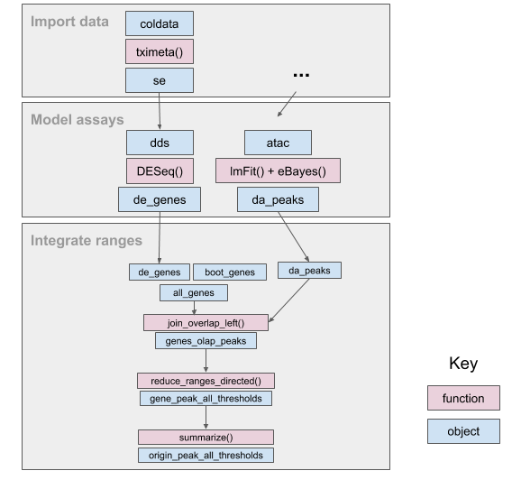
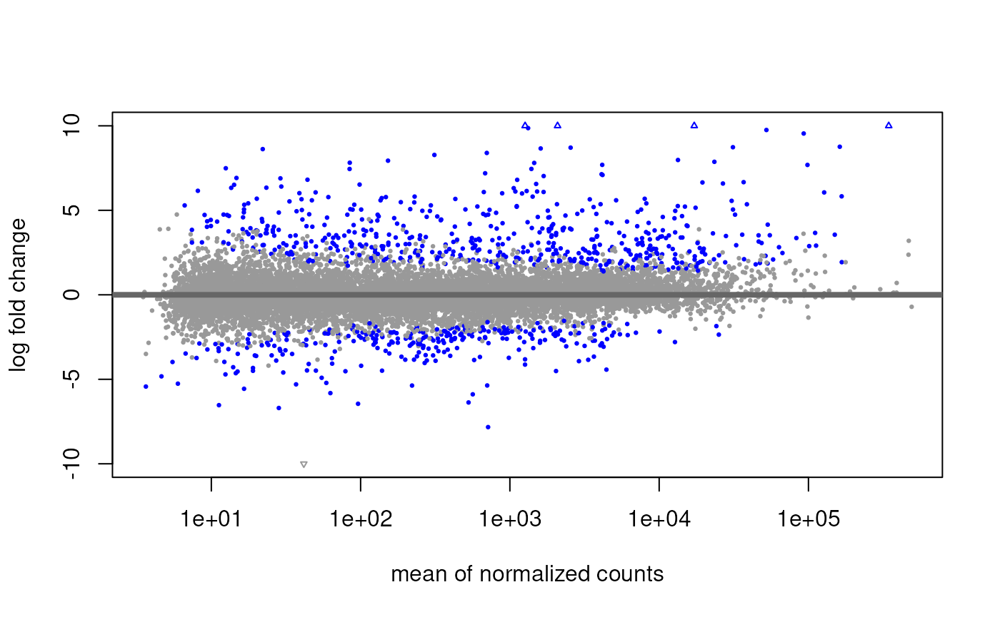
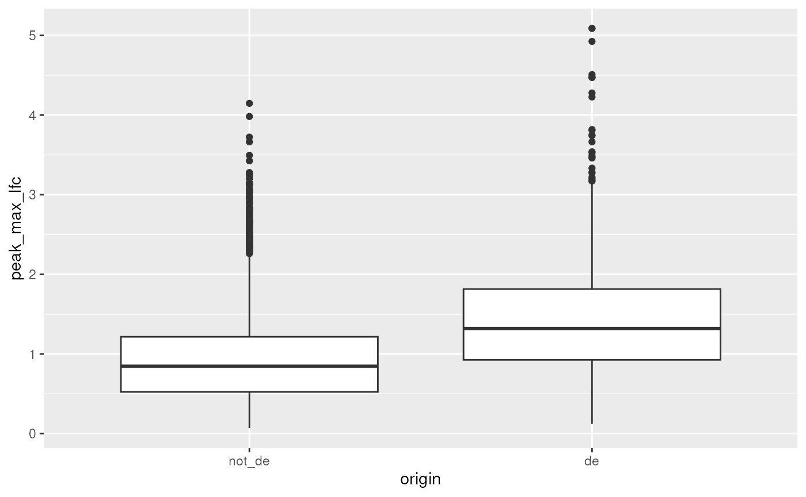
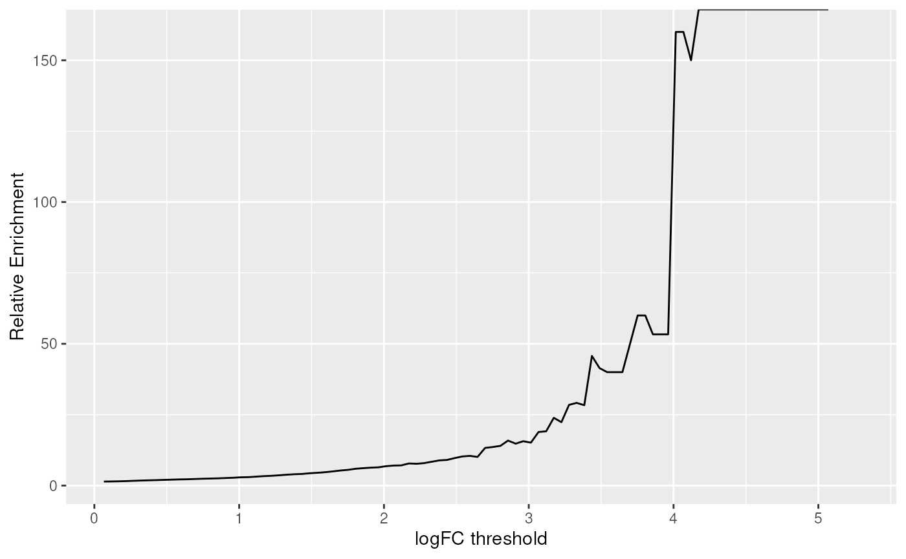
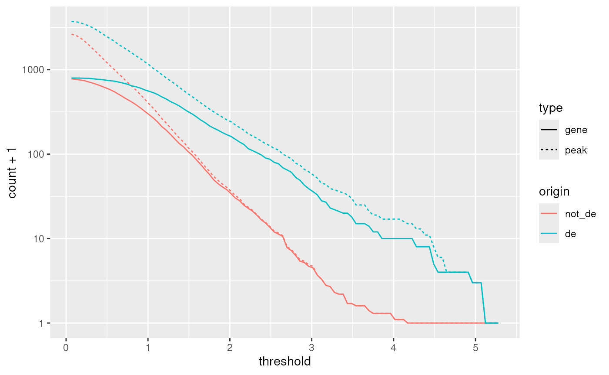

vignettes/fluentGenomics.Rmd
fluentGenomics.RmdAbstract
We construct a simple workflow for fluent genomics data analysis using the R/Bioconductor ecosystem. This involves three core steps: import the data into an appropriate abstraction, model the data with respect to the biological questions of interest, and integrate the results with respect to their underlying genomic coordinates. Here we show how to implement these steps to integrate published RNA-seq and ATAC-seq experiments on macrophage cell lines. Using tximeta, we import RNA-seq transcript quantifications into an analysis-ready data structure, called the SummarizedExperiment, that contains the ranges of the reference transcripts and metadata on their provenance. Using SummarizedExperiments to represent the ATAC-seq and RNA-seq data, we model differentially accessible (DA) chromatin peaks and differentially expressed (DE) genes with existing Bioconductor packages. Using plyranges we then integrate the results to see if there is an enrichment of DA peaks near DE genes by finding overlaps and aggregating over log-fold change thresholds. The combination of these packages and their integration with the Bioconductor ecosystem provide a coherent framework for analysts to iteratively and reproducibly explore their biological data.(ref:workflow) An overview of the fluent genomics workflow. First, we import data as a SummarizedExperiment object, which enables interoperability with downstream analysis packages. Then we model our assay data, using the existing Bioconductor packages DESeq2 and limma. We take the results of our models for each assay with respect to their genomic coordinates, and integrate them. First, we compute the overlap between the results of each assay, then aggregate over the combined genomic regions, and finally summarize to compare enrichment for differentially expressed genes to non differentially expressed genes. The final output can be used for downstream visualization or further transformation.
(ref:maplot) Visualization of DESeq2 results as an “MA plot”. Genes that have an adjusted p-value below 0.01 are colored red.
(ref:boxplot) A boxplot of maximum LFCs for DA peaks for DE genes compared to non-DE genes where genes have at least one DA peak.
(ref:linechart) A line chart displaying how relative enrichment of DA peaks change between DE genes compared to non-DE genes as the absolute DA LFC threshold increases.
(ref:linechart2) A line chart displaying how gene and peak counts change as the absolute DA LFC threshold increases. Lines are colored according to whether they represent a gene that is DE or not. Note the x-axis is on a scale.
In this workflow, we examine a subset of the RNA-seq and ATAC-seq data from Alasoo et al. (2018), a study that involved treatment of macrophage cell lines from a number of human donors with interferon gamma (IFNg), Salmonella infection, or both treatments combined. Alasoo et al. (2018) examined gene expression and chromatin accessibility in a subset of 86 successfully differentiated induced pluripotent stem cells (iPSC) lines, and compared baseline and response with respect to chromatin accessibility and gene expression at specific quantitative trait loci (QTL). The authors found that many of the stimulus-specific expression QTL were already detectable as chromatin QTL in naive cells, and further hypothesize about the nature and role of transcription factors implicated in the response to stimulus.
We will perform a much simpler analysis than the one found in Alasoo et al. (2018), using their publicly available RNA-seq and ATAC-seq data (ignoring the genotypes). We will examine the effect of IFNg stimulation on gene expression and chromatin accessibility, and look to see if there is an enrichment of differentially accessible (DA) ATAC-seq peaks in the vicinity of differentially expressed (DE) genes. This is plausible, as the transcriptomic response to IFNg stimulation may be mediated through binding of regulatory proteins to accessible regions, and this binding may increase the accessibility of those regions such that it can be detected by ATAC-seq.

(ref:workflow)
Throughout the workflow (Figure @ref(fig:workflow)), we will use existing Bioconductor infrastructure to understand these datasets. In particular, we will emphasize the use of the Bioconductor packages plyranges and tximeta. The plyranges package fluently transforms data tied to genomic ranges using operations like shifting, window construction, overlap detection, etc. It is described by Lee et al. (2019) and leverages underlying core Bioconductor infrastructure (Lawrence et al. 2013; Huber et al. 2015) and the tidyverse design principles Wickham et al. (2019).
The tximeta package described by Love et al. (2019) is used to read RNA-seq quantification data into R/Bioconductor, such that the transcript ranges and their provenance are automatically attached to the object containing expression values and differential expression results.
The data used in this workflow is available from two packages: the macrophage Bioconductor ExperimentData package and from the workflow package fluentGenomics.
The macrophage package contains RNA-seq quantification from
24 RNA-seq samples, a subset of the RNA-seq samples generated and
analyzed by Alasoo et al. (2018). The paired-end reads were
quantified using Salmon (Patro et al. 2017), using the Gencode 29
human reference transcripts (Frankish et al. 2018). For more details
on quantification, and the exact code used, consult the vignette of the
macrophage
package. The package also contains the Snakemake file that
was used to distribute the Salmon quantification jobs on a
cluster (Köster and
Rahmann 2012).
The fluentGenomics package contains functionality to download and generate a cached SummarizedExperiment object from the normalized ATAC-seq data provided by Alasoo and Gaffney (2017). This object contains all 145 ATAC-seq samples across all experimental conditions as analyzed by Alasoo et al. (2018). The data can be also be downloaded directly from the Zenodo deposition.
The following code loads the path to the cached data file, or if it is not present, will create the cache and generate a SummarizedExperiment using the the BiocFileCache package (Shepherd and Morgan 2019).
We can then read the cached file and assign it to an object called
atac.
library(fluentGenomics)
atac <- readRDS(cache_atac_se())A precise description of how we obtained this SummarizedExperiment object can be found in section @ref(atac).
First, we specify a directory dir, where the
quantification files are stored. You could simply specify this directory
with:
dir <- "/path/to/quant/files"where the path is relative to your current R session. However, in
this case we have distributed the files in the macrophage
package. The relevant directory and associated files can be located
using system.file.
dir <- system.file("extdata", package = "macrophage")Information about the experiment is contained in the
coldata.csv file. We leverage the dplyr and
readr packages (as part of the tidyverse) to read this
file into R (Wickham et
al. 2019). We will see later that plyranges extends
these packages to accommodate genomic ranges.
library(readr)
colfile <- file.path(dir, "coldata.csv")
coldata <- read_csv(colfile) |>
dplyr::select(
names,
id = sample_id,
line = line_id,
condition = condition_name
) |>
dplyr::mutate(
files = file.path(dir, "quants", names, "quant.sf.gz"),
line = factor(line),
condition = relevel(factor(condition), "naive")
)## Rows: 24 Columns: 13
## ── Column specification ────────────────────────────────────────────────────────
## Delimiter: ","
## chr (10): names, sample_id, line_id, condition_name, macrophage_harvest, sal...
## dbl (3): replicate, ng_ul_mean, rna_auto
##
## ℹ Use `spec()` to retrieve the full column specification for this data.
## ℹ Specify the column types or set `show_col_types = FALSE` to quiet this message.
coldata## # A tibble: 24 × 5
## names id line condition files
## <chr> <chr> <fct> <fct> <chr>
## 1 SAMEA103885102 diku_A diku_1 naive /__w/_temp/Library/macrophage/extda…
## 2 SAMEA103885347 diku_B diku_1 IFNg /__w/_temp/Library/macrophage/extda…
## 3 SAMEA103885043 diku_C diku_1 SL1344 /__w/_temp/Library/macrophage/extda…
## 4 SAMEA103885392 diku_D diku_1 IFNg_SL1344 /__w/_temp/Library/macrophage/extda…
## 5 SAMEA103885182 eiwy_A eiwy_1 naive /__w/_temp/Library/macrophage/extda…
## 6 SAMEA103885136 eiwy_B eiwy_1 IFNg /__w/_temp/Library/macrophage/extda…
## 7 SAMEA103885413 eiwy_C eiwy_1 SL1344 /__w/_temp/Library/macrophage/extda…
## 8 SAMEA103884967 eiwy_D eiwy_1 IFNg_SL1344 /__w/_temp/Library/macrophage/extda…
## 9 SAMEA103885368 fikt_A fikt_3 naive /__w/_temp/Library/macrophage/extda…
## 10 SAMEA103885218 fikt_B fikt_3 IFNg /__w/_temp/Library/macrophage/extda…
## # ℹ 14 more rowsAfter we have read the coldata.csv file, we select
relevant columns from this table, create a new column called
files, and transform the existing line and
condition columns into factors. In the case of
condition, we specify the “naive” cell line as the
reference level. The files column points to the
quantifications for each observation – these files have been gzipped,
but would typically not have the ‘gz’ ending if used from
Salmon directly. One other thing to note is the use of the pipe
operator,|>, which can be read as “then”, i.e. first
read the data, then select columns, then mutate
them.
Now we have a table summarizing the experimental design and the locations of the quantifications. The following lines of code do a lot of work for the analyst: importing the RNA-seq quantification (dropping inferential replicates in this case), locating the relevant reference transcriptome, attaching the transcript ranges to the data, and fetching genome information. Inferential replicates are especially useful for performing transcript-level analysis, but here we will use a point estimate for the per-gene counts and perform gene-level analysis.
The result is a SummarizedExperiment object.
suppressPackageStartupMessages(library(SummarizedExperiment))
library(tximeta)
se <- tximeta(coldata, dropInfReps = TRUE, useHub = FALSE)## importing salmon quantification files## reading in files with read_tsv## 1 2 3 4 5 6 7 8 9 10 11 12 13 14 15 16 17 18 19 20 21 22 23 24
## found matching linkedTxome:
## [ GENCODE - Homo sapiens - release 29 ]
## building TxDb with 'txdbmaker' package
## Import genomic features from the file as a GRanges object ... OK
## Prepare the 'metadata' data frame ... OK
## Make the TxDb object ...## Warning in .get_cds_IDX(mcols0$type, mcols0$phase): The "phase" metadata column contains non-NA values for features of type
## stop_codon. This information was ignored.## Warning in .makeTxDb_normarg_chrominfo(chrominfo): genome version information
## is not available for this TxDb object## OK
## generating transcript ranges
## fetching genome info for GENCODE
se## class: RangedSummarizedExperiment
## dim: 205870 24
## metadata(6): tximetaInfo quantInfo ... txomeInfo txdbInfo
## assays(3): counts abundance length
## rownames(205870): ENST00000456328.2 ENST00000450305.2 ...
## ENST00000387460.2 ENST00000387461.2
## rowData names(3): tx_id gene_id tx_name
## colnames(24): SAMEA103885102 SAMEA103885347 ... SAMEA103885308
## SAMEA103884949
## colData names(4): names id line conditionOn a machine with a working internet connection, the above command
works without any extra steps, as the tximeta function
obtains any necessary metadata via FTP, unless it is already cached
locally. Here we pass useHub = FALSE so that the transcript
database is built directly from the local GTF registered by
makeLinkedTxome above, rather than being retrieved from
AnnotationHub. The tximeta package can also be used
without an internet connection, in this case the linked transcriptome
can be created directly from a Salmon index and gtf.
makeLinkedTxome(
indexDir = file.path(dir, "gencode.v29_salmon_0.12.0"),
source = "Gencode",
organism = "Homo sapiens",
release = "29",
genome = "GRCh38",
fasta = "ftp://ftp.ebi.ac.uk/pub/databases/gencode/Gencode_human/release_29/gencode.v29.transcripts.fa.gz",
gtf = file.path(dir, "gencode.v29.annotation.gtf.gz"), # local version
write = FALSE
)Because tximeta knows the correct reference transcriptome, we can ask tximeta to summarize the transcript-level data to the gene level using the methods of Soneson et al. (2015).
gse <- summarizeToGene(se)## loading existing TxDb created: 2026-06-10 01:44:10## Loading required package: GenomicFeatures## Loading required package: AnnotationDbi## obtaining transcript-to-gene mapping from database## generating gene ranges## assignRanges='range': gene ranges assigned by total range of isoforms
## see details at: ?summarizeToGene,SummarizedExperiment-method## summarizing abundance## summarizing counts## summarizing lengthOne final note is that the start of positive strand
genes and the end of negative strand genes is now dictated
by the genomic extent of the isoforms of the gene (so the
start and end of the reduced
GRanges). Another alternative would be to either operate on
transcript abundance, and perform differential analysis on transcript
(and so avoid defining the TSS of a set of isoforms), or to use
gene-level summarized expression but to pick the most representative TSS
based on isoform expression.
The SummarizedExperiment object containing ATAC-seq peaks can be created from the following tab-delimited files from Alasoo and Gaffney (2017):
ATAC_sample_metadata.txt.gz
(<1M)ATAC_cqn_matrix.txt.gz (109M)ATAC_peak_metadata.txt.gz
(5.6M)To begin, we read in the sample metadata, following similar steps to
those we used to generate the coldata table for the RNA-seq
experiment:
atac_coldata <- read_tsv("ATAC_sample_metadata.txt.gz") |>
select(
sample_id,
donor,
condition = condition_name
) |>
mutate(condition = relevel(factor(condition), "naive"))The ATAC-seq counts have already been normalized with cqn
(Hansen et al.
2012) and log2 transformed. Loading the
cqn-normalized matrix of log2 transformed read counts takes ~30
seconds and loads an object of ~370 Mb. We set the column names so that
the first column contains the rownames of the matrix, and the remaining
columns are the sample identities from the atac_coldata
object.
atac_mat <- read_tsv("ATAC_cqn_matrix.txt.gz",
skip = 1,
col_names = c("rownames", atac_coldata[["sample_id"]]))
rownames <- atac_mat[["rownames"]]
atac_mat <- as.matrix(atac_mat[, -1])
rownames(atac_mat) <- rownamesWe read in the peak metadata (locations in the genome), and convert
it to a GRanges object. The as_granges() function
automatically converts the data.frame into a GRanges
object. From that result, we extract the peak_id column and set the
genome information to the build “GRCh38”. We know this from the Zenodo
entry.
library(plyranges)
peaks_df <- read_tsv("ATAC_peak_metadata.txt.gz", col_types = c("cidciicdc"))
peaks_gr <- peaks_df |>
as_granges(seqnames = chr) |>
select(peak_id = gene_id) |>
set_genome_info(genome = "GRCh38")Finally, we construct a SummarizedExperiment object. We place the matrix into the assays slot as a named list, the annotated peaks into the row-wise ranges slot, and the sample metadata into the column-wise data slot:
atac <- SummarizedExperiment(assays = list(cqndata = atac_mat),
rowRanges = peaks_gr,
colData = atac_coldata)We can easily run a differential expression analysis with
DESeq2 using the following code chunks (Love et al. 2014).
The design formula indicates that we want to control for the donor
baselines (line) and test for differences in gene
expression on the condition. For a more comprehensive discussion of DE
workflows in Bioconductor see Love et al. (2016) and Law et al. (2018).
library(DESeq2)
dds <- DESeqDataSet(gse, ~ line + condition)## using counts and average transcript lengths from tximeta
# filter out lowly expressed genes
# at least 10 counts in at least 6 samples
keep <- rowSums(counts(dds) >= 10) >= 6
dds <- dds[keep, ]The model is fit with the following line of code:
dds <- DESeq(dds)## estimating size factors## using 'avgTxLength' from assays(dds), correcting for library size## estimating dispersions## gene-wise dispersion estimates## mean-dispersion relationship## final dispersion estimates## fitting model and testingBelow we set the contrast on the condition variable, indicating we are estimating the fold change (LFC) of IFNg stimulated cell lines against naive cell lines. We are interested in LFC greater than 1 at a nominal false discovery rate (FDR) of 1%.
To see the results of the expression analysis, we can generate a summary table and an MA plot:
summary(res)##
## out of 17806 with nonzero total read count
## adjusted p-value < 0.01
## LFC > 1.00 (up) : 543, 3%
## LFC < -1.00 (down) : 279, 1.6%
## outliers [1] : 0, 0%
## low counts [2] : 0, 0%
## (mean count < 3)
## [1] see 'cooksCutoff' argument of ?results
## [2] see 'independentFiltering' argument of ?results
(ref:maplot)
We now output the results as a GRanges object, and due to
the conventions of plyranges, we construct a new column called
gene_id from the row names of the results. Each row now
contains the genomic region (seqnames, start,
end, strand) along with corresponding metadata
columns (the gene_id and the results of the test). Note
that tximeta has correctly identified the reference genome as
“hg38”, and this has also been added to the GRanges along the
results columns. This kind of book-keeping is vital once overlap
operations are performed to ensure that plyranges is not
comparing across incompatible genomes.
suppressPackageStartupMessages(library(plyranges))
de_genes <- results(dds,
contrast = c("condition", "IFNg", "naive"),
lfcThreshold = 1,
format = "GRanges") |>
names_to_column("gene_id")
de_genes## GRanges object with 17806 ranges and 7 metadata columns:
## seqnames ranges strand | gene_id baseMean
## <Rle> <IRanges> <Rle> | <character> <numeric>
## [1] chrX 100627109-100639991 - | ENSG00000000003.14 171.571
## [2] chr20 50934867-50958555 - | ENSG00000000419.12 967.751
## [3] chr1 169849631-169894267 - | ENSG00000000457.13 682.433
## [4] chr1 169662007-169854080 + | ENSG00000000460.16 262.963
## [5] chr1 27612064-27635277 - | ENSG00000000938.12 2660.102
## ... ... ... ... . ... ...
## [17802] chr10 84167228-84172093 - | ENSG00000285972.1 10.04746
## [17803] chr6 63572012-63583587 + | ENSG00000285976.1 4586.34617
## [17804] chr16 57177349-57181390 + | ENSG00000285979.1 14.29653
## [17805] chr8 103398658-103501895 - | ENSG00000285982.1 27.76296
## [17806] chr10 12563151-12567351 + | ENSG00000285994.1 6.60409
## log2FoldChange lfcSE stat pvalue padj
## <numeric> <numeric> <numeric> <numeric> <numeric>
## [1] -0.2822450 0.3005710 -0.939029 0.9915391 1.000000
## [2] 0.0391223 0.0859708 0.455065 1.0000000 1.000000
## [3] 1.2846179 0.1969067 6.523992 0.0741664 0.756362
## [4] -1.4718762 0.2186916 -6.730372 0.0154747 0.204864
## [5] 0.6754781 0.2360530 2.861552 0.9154008 1.000000
## ... ... ... ... ... ...
## [17802] 0.5484518 0.444319 1.234366 0.845496 1
## [17803] -0.0339296 0.188005 -0.180472 1.000000 1
## [17804] 0.3123477 0.522700 0.597566 0.911867 1
## [17805] 0.9945187 1.582373 0.628498 0.605134 1
## [17806] 0.2539975 0.595751 0.426348 0.912402 1
## -------
## seqinfo: 25 sequences (1 circular) from hg38 genomeFrom this, we can restrict the results to those that meet our FDR threshold and select (and rename) the metadata columns we’re interested in:
de_genes <- de_genes |>
filter(padj < 0.01) |>
select(gene_id, de_log2FC = log2FoldChange, de_padj = padj)We now wish to extract genes for which there is evidence that the LFC
is not large. We perform this test by specifying an LFC
threshold and an alternative hypothesis (altHypothesis)
that the LFC is less than the threshold in absolute value. To visualize
the result of this test, you can run results without
format="GRanges", and pass this object to
plotMA as before. We label these genes as
other_genes and later as “non-DE genes”, for comparison
with our de_genes set.
other_genes <- results(dds,
contrast = c("condition", "IFNg", "naive"),
lfcThreshold = 1,
altHypothesis = "lessAbs",
format = "GRanges") |>
filter(padj < 0.01) |>
names_to_column("gene_id") |>
dplyr::select(gene_id,
de_log2FC = log2FoldChange,
de_padj = padj)The following section describes the process we have used for generating a GRanges object of differential peaks from the ATAC-seq data in Alasoo et al. (2018).
The code chunks for the remainder of this section are not run.
For assessing differential accessibility, we run limma (Smyth 2004), and generate the a summary of LFCs and adjusted p-values for the peaks:
library(limma)
design <- model.matrix(~ donor + condition, colData(atac))
fit <- lmFit(assay(atac), design)
fit <- eBayes(fit)
idx <- which(colnames(fit$coefficients) == "conditionIFNg")
tt <- topTable(fit, coef = idx, sort.by = "none", n = nrow(atac))We now take the rowRanges of the
SummarizedExperiment and attach the LFCs and adjusted p-values
from limma, so that we can consider the overlap with
differential expression. Note that we set the genome build to “hg38” and
restyle the chromosome information to use the “UCSC” style (e.g. “chr1”,
“chr2”, etc.). Again, we know the genome build from the Zenodo entry for
the ATAC-seq data.
atac_peaks <- rowRanges(atac) |>
remove_names() |>
mutate(
da_log2FC = tt$logFC,
da_padj = tt$adj.P.Val
) |>
set_genome_info(genome = "hg38")
seqlevelsStyle(atac_peaks) <- "UCSC"The final GRanges object containing the DA peaks is included in the workflow package and can be loaded as follows:
library(fluentGenomics)
peaks## GRanges object with 296220 ranges and 3 metadata columns:
## seqnames ranges strand | peak_id da_log2FC
## <Rle> <IRanges> <Rle> | <character> <numeric>
## [1] chr1 9979-10668 * | ATAC_peak_1 0.266185
## [2] chr1 10939-11473 * | ATAC_peak_2 0.322177
## [3] chr1 15505-15729 * | ATAC_peak_3 -0.574160
## [4] chr1 21148-21481 * | ATAC_peak_4 -1.147066
## [5] chr1 21864-22067 * | ATAC_peak_5 -0.896143
## ... ... ... ... . ... ...
## [296216] chrX 155896572-155896835 * | ATAC_peak_296216 -0.834629
## [296217] chrX 155958507-155958646 * | ATAC_peak_296217 -0.147537
## [296218] chrX 156016760-156016975 * | ATAC_peak_296218 -0.609732
## [296219] chrX 156028551-156029422 * | ATAC_peak_296219 -0.347678
## [296220] chrX 156030135-156030785 * | ATAC_peak_296220 0.492442
## da_padj
## <numeric>
## [1] 9.10673e-05
## [2] 2.03435e-05
## [3] 3.41708e-08
## [4] 8.22299e-26
## [5] 4.79453e-11
## ... ...
## [296216] 1.33546e-11
## [296217] 3.13015e-01
## [296218] 3.62339e-09
## [296219] 6.94823e-06
## [296220] 7.07664e-13
## -------
## seqinfo: 23 sequences from hg38 genome; no seqlengthsWe have already used plyranges a number of times above, to
filter, mutate, and select on
GRanges objects, as well as ensuring the correct genome
annotation and style has been used. The plyranges package
provides a grammar for performing transformations of genomic data (Lee et al. 2019).
Computations resulting from compositions of plyranges “verbs”
are performed using underlying, highly optimized range operations in the
GenomicRanges package (Lawrence et al. 2013).
For the overlap analysis, we filter the annotated peaks to have a nominal FDR bound of 1%.
da_peaks <- peaks |>
filter(da_padj < 0.01)We now have GRanges objects that contain DE genes, genes without strong signal of DE, and DA peaks. We are ready to answer the question: is there an enrichment of DA ATAC-seq peaks in the vicinity of DE genes compared to genes without sufficient DE signal?
As plyranges is built on top of dplyr, it
implements methods for many of its verbs for GRanges objects.
Here we can use slice to randomly sample the rows of the
other_genes. The sample.int function will
generate random samples of size equal to the number of DE-genes from the
number of rows in other_genes:
size <- length(de_genes)
slice(other_genes, sample.int(n(), size))## GRanges object with 822 ranges and 3 metadata columns:
## seqnames ranges strand | gene_id de_log2FC
## <Rle> <IRanges> <Rle> | <character> <numeric>
## [1] chr1 150293720-150308979 + | ENSG00000266472.5 -0.1723506
## [2] chr11 72836745-73142261 - | ENSG00000137478.14 -0.3811184
## [3] chr3 3144628-3179727 - | ENSG00000113851.14 -0.0264545
## [4] chr1 77944055-77979110 - | ENSG00000162613.16 0.0709176
## [5] chr2 37084451-37099244 + | ENSG00000152133.14 0.1181541
## ... ... ... ... . ... ...
## [818] chr18 12991362-13125052 + | ENSG00000101639.18 -0.1762534
## [819] chr1 109062486-109076002 - | ENSG00000197780.9 -0.0314586
## [820] chrX 18425583-18653629 + | ENSG00000008086.11 0.1729785
## [821] chrX 47651798-47659161 - | ENSG00000126756.11 -0.2535162
## [822] chr11 10797050-10809110 - | ENSG00000110321.16 -0.0354673
## de_padj
## <numeric>
## [1] 1.81191e-21
## [2] 1.38754e-05
## [3] 4.57222e-13
## [4] 2.86806e-20
## [5] 2.29822e-03
## ... ...
## [818] 1.30634e-06
## [819] 8.75006e-20
## [820] 5.19375e-03
## [821] 4.35533e-23
## [822] 1.23523e-24
## -------
## seqinfo: 25 sequences (1 circular) from hg38 genomeWe can repeat this many times to create many samples via
replicate. By replicating the sub-sampling multiple times,
we minimize the variance on the enrichment statistics induced by the
sampling process.
# set a seed for the results
set.seed(2019 - 08 - 02)
boot_genes <- replicate(10,
slice(other_genes, sample.int(n(), size)),
simplify = FALSE)This creates a list of GRanges objects as a list, and we can
bind these together using the bind_ranges function. This
function creates a new column called “resample” on the result that
identifies each of the input GRanges objects:
boot_genes <- bind_ranges(boot_genes, .id = "resample")Similarly, we can then combine the boot_genes
GRanges, with the DE GRanges object. As the resample
column was not present on the DE GRanges object, this is given
a missing value which we recode to a 0 using mutate()
all_genes <- bind_ranges(
de = de_genes,
not_de = boot_genes,
.id = "origin"
) |>
mutate(
origin = factor(origin, c("not_de", "de")),
resample = ifelse(is.na(resample), 0L, as.integer(resample))
)
all_genes## GRanges object with 9042 ranges and 5 metadata columns:
## seqnames ranges strand | gene_id de_log2FC
## <Rle> <IRanges> <Rle> | <character> <numeric>
## [1] chr1 196651878-196747504 + | ENSG00000000971.15 4.98711
## [2] chr6 46129993-46146699 + | ENSG00000001561.6 1.92722
## [3] chr4 17577192-17607972 + | ENSG00000002549.12 2.93373
## [4] chr7 150800403-150805120 + | ENSG00000002933.8 3.16722
## [5] chr4 15778275-15853230 + | ENSG00000004468.12 5.40894
## ... ... ... ... . ... ...
## [9038] chr2 197705369-197708387 + | ENSG00000247626.4 -0.0862514
## [9039] chr5 90515611-90529584 - | ENSG00000176018.12 0.0161995
## [9040] chr12 6666477-6689572 - | ENSG00000126746.17 0.0158683
## [9041] chr19 984271-998438 + | ENSG00000065268.10 -0.1487556
## [9042] chr12 47782722-47833132 - | ENSG00000061273.17 -0.3302549
## de_padj resample origin
## <numeric> <integer> <factor>
## [1] 6.85285e-14 0 de
## [2] 1.58739e-05 0 de
## [3] 1.00655e-11 0 de
## [4] 5.36800e-09 0 de
## [5] 2.41452e-18 0 de
## ... ... ... ...
## [9038] 1.25864e-04 10 not_de
## [9039] 6.59016e-05 10 not_de
## [9040] 1.15330e-13 10 not_de
## [9041] 2.99917e-04 10 not_de
## [9042] 9.17085e-05 10 not_de
## -------
## seqinfo: 25 sequences (1 circular) from hg38 genomeNow we would like to modify our gene ranges so they contain the 10
kilobases on either side of their transcription start site (TSS). There
are many ways one could do this, but we prefer an approach via the
anchoring methods in plyranges. Because there is a mutual
dependence between the start, end, width, and strand of a
GRanges object, we define anchors to fix one of
start and end, while modifying the
width. As an example, to extract just the TSS, we can
anchor by the 5’ end of the range and modify the width of the range to
equal 1.
Anchoring by the 5’ end of a range will fix the end of
negatively stranded ranges, and fix the start of positively
stranded ranges.
We can then repeat the same pattern but this time using
anchor_center() to tell plyranges that we are
making the TSS the midpoint of a range that has total width of 20kb, or
10kb both upstream and downstream of the TSS.
all_genes <- all_genes |>
anchor_center() |>
mutate(width = 2 * 1e4)We are now ready to compute overlaps between RNA-seq genes (our DE set and bootstrap sets) and the ATAC-seq peaks. In plyranges, overlaps are defined as joins between two GRanges objects: a left and a right GRanges object. In an overlap join, a match is any range on the left GRanges that is overlapped by the right GRanges. One powerful aspect of the overlap joins is that the result maintains all (metadata) columns from each of the left and right ranges which makes downstream summaries easy to compute.
To combine the DE genes with the DA peaks, we perform a left overlap
join. This returns to us the all_genes ranges (potentially
with duplication), but with the metadata columns from those overlapping
DA peaks. For any gene that has no overlaps, the DA peak columns will
have NA’s.
genes_olap_peaks <- all_genes |>
join_overlap_left(da_peaks)
genes_olap_peaks## GRanges object with 30449 ranges and 8 metadata columns:
## seqnames ranges strand | gene_id de_log2FC
## <Rle> <IRanges> <Rle> | <character> <numeric>
## [1] chr1 196641878-196661877 + | ENSG00000000971.15 4.98711
## [2] chr6 46119993-46139992 + | ENSG00000001561.6 1.92722
## [3] chr4 17567192-17587191 + | ENSG00000002549.12 2.93373
## [4] chr4 17567192-17587191 + | ENSG00000002549.12 2.93373
## [5] chr4 17567192-17587191 + | ENSG00000002549.12 2.93373
## ... ... ... ... . ... ...
## [30445] chr12 47823132-47843131 - | ENSG00000061273.17 -0.330255
## [30446] chr12 47823132-47843131 - | ENSG00000061273.17 -0.330255
## [30447] chr12 47823132-47843131 - | ENSG00000061273.17 -0.330255
## [30448] chr12 47823132-47843131 - | ENSG00000061273.17 -0.330255
## [30449] chr12 47823132-47843131 - | ENSG00000061273.17 -0.330255
## de_padj resample origin peak_id da_log2FC da_padj
## <numeric> <integer> <factor> <character> <numeric> <numeric>
## [1] 6.85285e-14 0 de ATAC_peak_21236 -0.546582 1.15274e-04
## [2] 1.58739e-05 0 de ATAC_peak_231183 1.453297 9.73225e-17
## [3] 1.00655e-11 0 de ATAC_peak_193578 0.222371 3.00939e-11
## [4] 1.00655e-11 0 de ATAC_peak_193579 -0.281615 7.99889e-05
## [5] 1.00655e-11 0 de ATAC_peak_193580 0.673705 7.60043e-15
## ... ... ... ... ... ... ...
## [30445] 9.17085e-05 10 not_de ATAC_peak_61944 -0.864385 2.15479e-10
## [30446] 9.17085e-05 10 not_de ATAC_peak_61945 -1.263839 2.83702e-21
## [30447] 9.17085e-05 10 not_de ATAC_peak_61946 -0.854639 2.02495e-16
## [30448] 9.17085e-05 10 not_de ATAC_peak_61947 -0.421568 5.22070e-04
## [30449] 9.17085e-05 10 not_de ATAC_peak_61948 -0.538309 1.46133e-08
## -------
## seqinfo: 25 sequences (1 circular) from hg38 genomeNow we can ask, how many DA peaks are near DE genes relative to
“other” non-DE genes? A gene may appear more than once in
genes_olap_peaks, because multiple peaks may overlap a
single gene, or because we have re-sampled the same gene more than once,
or a combination of these two cases.
For each gene (that is the combination of chromosome, the start, end,
and strand), and the “origin” (DE vs not-DE) we can compute the distinct
number of peaks for each gene and the maximum peak based on LFC. This is
achieved via reduce_ranges_directed, which allows an
aggregation to result in a GRanges object via merging
neighboring genomic regions. The use of the directed suffix indicates
we’re maintaining strand information. In this case, we are simply
merging ranges (genes) via the groups we mentioned above. We also have
to account for the number of resamples we have performed when counting
if there are any peaks, to ensure we do not double count the same
peak:
gene_peak_max_lfc <- genes_olap_peaks |>
group_by(gene_id, origin) |>
reduce_ranges_directed(
peak_count = sum(!is.na(da_padj)) / n_distinct(resample),
peak_max_lfc = max(abs(da_log2FC))
)We can then filter genes if they have any peaks and compare the peak fold changes between non-DE and DE genes using a boxplot:
library(ggplot2)
gene_peak_max_lfc |>
filter(peak_count > 0) |>
as.data.frame() |>
ggplot(aes(origin, peak_max_lfc)) +
geom_boxplot()
(ref:boxplot)
In general, the DE genes have larger maximum DA fold changes relative to the non-DE genes.
Next we examine how thresholds on the DA LFC modify the enrichment we observe of DA peaks near DE or non-DE genes. First, we want to know how the number of peaks within DE genes and non-DE genes change as we change threshold values on the peak LFC. As an example, we could compute this by arbitrarily chosen LFC thresholds of 1 or 2 as follows:
origin_peak_lfc <- genes_olap_peaks |>
group_by(origin) |>
summarize(
peak_count = sum(!is.na(da_padj)) / n_distinct(resample),
lfc1_peak_count = sum(
abs(da_log2FC) > 1, na.rm = TRUE
) / n_distinct(resample),
lfc2_peak_count = sum(
abs(da_log2FC) > 2, na.rm = TRUE
) / n_distinct(resample)
)
origin_peak_lfc## DataFrame with 2 rows and 4 columns
## origin peak_count lfc1_peak_count lfc2_peak_count
## <factor> <numeric> <numeric> <numeric>
## 1 not_de 2625.7 406.8 35.7
## 2 de 3726.0 1181.0 246.0Here we see that DE genes tend to have more DA peaks near them, and that the number of DA peaks decreases as we increase the DA LFC threshold (as expected). We now show how to compute the ratio of peak counts from DE compared to non-DE genes, so we can see how this ratio changes for various DA LFC thresholds.
For all variables except for the origin column we divide
the first row’s values by the second row, which will be the enrichment
of peaks in DE genes compared to other genes. This requires us to
reshape the summary table from long form back to wide form using the
tidyr package. First we pivot the results of the
peak_count columns into name-value pairs, then pivot again
to place values into the origin column. Then we create a
new column with the relative enrichment:
origin_peak_lfc |>
as.data.frame() |>
tidyr::pivot_longer(cols = -origin) |>
tidyr::pivot_wider(names_from = origin, values_from = value) |>
mutate(enrichment = de / not_de)## # A tibble: 3 × 4
## name not_de de enrichment
## <chr> <dbl> <dbl> <dbl>
## 1 peak_count 2626. 3726 1.42
## 2 lfc1_peak_count 407. 1181 2.90
## 3 lfc2_peak_count 35.7 246 6.89The above table shows that relative enrichment increases for a larger LFC threshold.
Due to the one-to-many mappings of genes to peaks, it is unknown if we have the same number of DE genes participating or less, as we increase the threshold on the DA LFC. We can examine the number of genes with overlapping DA peaks at various thresholds by grouping and aggregating twice. First, the number of peaks that meet the thresholds are computed within each gene, origin, and resample group. Second, within the origin column, we compute the total number of peaks that meet the DA LFC threshold and the number of genes that have more than zero peaks (again averaging over the number of resamples).
genes_olap_peaks |>
group_by(gene_id, origin, resample) |>
reduce_ranges_directed(
lfc1 = sum(abs(da_log2FC) > 1, na.rm = TRUE),
lfc2 = sum(abs(da_log2FC) > 2, na.rm = TRUE)
) |>
group_by(origin) |>
summarize(
lfc1_gene_count = sum(lfc1 > 0) / n_distinct(resample),
lfc1_peak_count = sum(lfc1) / n_distinct(resample),
lfc2_gene_count = sum(lfc2 > 0) / n_distinct(resample),
lfc2_peak_count = sum(lfc2) / n_distinct(resample)
)## DataFrame with 2 rows and 5 columns
## origin lfc1_gene_count lfc1_peak_count lfc2_gene_count lfc2_peak_count
## <factor> <numeric> <numeric> <numeric> <numeric>
## 1 not_de 300 406.8 33.4 35.7
## 2 de 564 1181.0 162.0 246.0To do this for many thresholds is cumbersome and would create a lot
of duplicate code. Instead we create a single function called
count_above_threshold that accepts a variable and a vector
of thresholds, and computes the sum of the absolute value of the
variable for each element in the thresholds vector.
count_if_above_threshold <- function(var, thresholds) {
lapply(thresholds, function(.) sum(abs(var) > ., na.rm = TRUE))
}The above function will compute the counts for any arbitrary
threshold, so we can apply it over possible LFC thresholds of interest.
We choose a grid of one hundred thresholds based on the range of
absolute LFC values in the da_peaks GRanges
object:
thresholds <- da_peaks |>
mutate(abs_lfc = abs(da_log2FC)) |>
with(
seq(min(abs_lfc), max(abs_lfc), length.out = 100)
)The peak counts for each threshold are computed as a new list-column
called value. First, the GRanges object has been
grouped by the gene, origin, and the number of resamples columns. Then
we aggregate over those columns, so each row will contain the peak
counts for all of the thresholds for a gene, origin, and resample. We
also maintain another list-column that contains the threshold
values.
genes_peak_all_thresholds <- genes_olap_peaks |>
group_by(gene_id, origin, resample) |>
reduce_ranges_directed(
value = count_if_above_threshold(da_log2FC, thresholds),
threshold = list(thresholds)
)
genes_peak_all_thresholds## GRanges object with 9042 ranges and 5 metadata columns:
## seqnames ranges strand | gene_id origin
## <Rle> <IRanges> <Rle> | <character> <factor>
## [1] chr1 196641878-196661877 + | ENSG00000000971.15 de
## [2] chr6 46119993-46139992 + | ENSG00000001561.6 de
## [3] chr4 17567192-17587191 + | ENSG00000002549.12 de
## [4] chr7 150790403-150810402 + | ENSG00000002933.8 de
## [5] chr4 15768275-15788274 + | ENSG00000004468.12 de
## ... ... ... ... . ... ...
## [9038] chr2 197695369-197715368 + | ENSG00000247626.4 not_de
## [9039] chr5 90519584-90539583 - | ENSG00000176018.12 not_de
## [9040] chr12 6679572-6699571 - | ENSG00000126746.17 not_de
## [9041] chr19 974271-994270 + | ENSG00000065268.10 not_de
## [9042] chr12 47823132-47843131 - | ENSG00000061273.17 not_de
## resample value threshold
## <integer> <IntegerList> <NumericList>
## [1] 0 1,1,1,... 0.0658243,0.1184840,0.1711436,...
## [2] 0 1,1,1,... 0.0658243,0.1184840,0.1711436,...
## [3] 0 6,6,6,... 0.0658243,0.1184840,0.1711436,...
## [4] 0 4,4,4,... 0.0658243,0.1184840,0.1711436,...
## [5] 0 11,11,11,... 0.0658243,0.1184840,0.1711436,...
## ... ... ... ...
## [9038] 10 6,5,5,... 0.0658243,0.1184840,0.1711436,...
## [9039] 10 2,2,1,... 0.0658243,0.1184840,0.1711436,...
## [9040] 10 2,2,2,... 0.0658243,0.1184840,0.1711436,...
## [9041] 10 3,3,3,... 0.0658243,0.1184840,0.1711436,...
## [9042] 10 7,7,7,... 0.0658243,0.1184840,0.1711436,...
## -------
## seqinfo: 25 sequences (1 circular) from hg38 genomeNow we can expand these list-columns into a long GRanges
object using the expand_ranges() function. This function
will unlist the value and threshold columns
and lengthen the resulting GRanges object. To compute the peak
and gene counts for each threshold, we apply the same summarization as
before:
origin_peak_all_thresholds <- genes_peak_all_thresholds |>
expand_ranges() |>
group_by(origin, threshold) |>
summarize(
gene_count = sum(value > 0) / n_distinct(resample),
peak_count = sum(value) / n_distinct(resample)
)
origin_peak_all_thresholds## DataFrame with 200 rows and 4 columns
## origin threshold gene_count peak_count
## <factor> <numeric> <numeric> <numeric>
## 1 not_de 0.0658243 778.1 2625.3
## 2 not_de 0.1184840 768.0 2548.1
## 3 not_de 0.1711436 753.8 2391.3
## 4 not_de 0.2238033 739.3 2183.3
## 5 not_de 0.2764629 714.6 1961.2
## ... ... ... ... ...
## 196 de 5.06849 2 2
## 197 de 5.12115 0 0
## 198 de 5.17381 0 0
## 199 de 5.22647 0 0
## 200 de 5.27913 0 0Again we can compute the relative enrichment in LFCs in the same manner as before, by pivoting the results to long form then back to wide form to compute the enrichment. We visualize the peak enrichment changes of DE genes relative to other genes as a line chart:
origin_threshold_counts <- origin_peak_all_thresholds |>
as.data.frame() |>
tidyr::pivot_longer(cols = -c(origin, threshold),
names_to = c("type", "var"),
names_sep = "_",
values_to = "count") |>
select(-var)
origin_threshold_counts |>
filter(type == "peak") |>
tidyr::pivot_wider(names_from = origin, values_from = count) |>
mutate(enrichment = de / not_de) |>
ggplot(aes(x = threshold, y = enrichment)) +
geom_line() +
labs(x = "logFC threshold", y = "Relative Enrichment")## Warning: Removed 4 rows containing missing values or values outside the scale range
## (`geom_line()`).
(ref:linechart)
We computed the sum of DA peaks near the DE genes, for increasing LFC thresholds on the accessibility change. As we increased the threshold, the number of total peaks went down (likewise the mean number of DA peaks per gene). It is also likely the number of DE genes with a DA peak nearby with such a large change went down. We can investigate this with a plot that summarizes many of the aspects underlying the enrichment plot above.
origin_threshold_counts |>
ggplot(aes(x = threshold,
y = count + 1,
color = origin,
linetype = type)) +
geom_line() +
scale_y_log10()
(ref:linechart2)
We have shown that by using plyranges and tximeta (with support of Bioconductor and tidyverse ecosystems) we can fluently iterate through the biological data science workflow: from import, through to modeling, and data integration.
There are several further steps that would be interesting to perform in this analysis; for example, we could modify window size around the TSS to see how it affects enrichment, and vary the FDR cut-offs for both the DE gene and DA peak sets. We could also have computed variance in addition to the mean of the bootstrap set, and so drawn an interval around the enrichment line.
Finally, our workflow illustrates the benefits of using appropriate data abstractions provided by Bioconductor such as the SummarizedExperiment and GRanges. These abstractions provide users with a mental model of their experimental data and are the building blocks for constructing the modular and iterative analyses we have shown here. Consequently, we have been able to interoperate many decoupled R packages (from both Bioconductor and the tidyverse) to construct a seamless end-to-end workflow that is far too specialized for a single monolithic tool.
The workflow materials, including this article can be fully
reproduced following the instructions found at the Github repository sa-lee/fluentGenomics.
Moreover, the development version of the workflow and all downstream
dependencies can be installed using the BiocManager package
by running:
# development version from Github
BiocManager::install("sa-lee/fluentGenomics")
# version available from Bioconductor
BiocManager::install("fluentGenomics")This article and the analyses were performed with R (R Core Team 2019) using the rmarkdown (Allaire et al. 2019), and knitr (Xie 2019, 2015) packages.
## R version 4.6.0 (2026-04-24)
## Platform: x86_64-pc-linux-gnu
## Running under: Ubuntu 24.04.4 LTS
##
## Matrix products: default
## BLAS: /usr/lib/x86_64-linux-gnu/openblas-pthread/libblas.so.3
## LAPACK: /usr/lib/x86_64-linux-gnu/openblas-pthread/libopenblasp-r0.3.26.so; LAPACK version 3.12.0
##
## locale:
## [1] LC_CTYPE=en_US.UTF-8 LC_NUMERIC=C
## [3] LC_TIME=en_US.UTF-8 LC_COLLATE=en_US.UTF-8
## [5] LC_MONETARY=en_US.UTF-8 LC_MESSAGES=en_US.UTF-8
## [7] LC_PAPER=en_US.UTF-8 LC_NAME=C
## [9] LC_ADDRESS=C LC_TELEPHONE=C
## [11] LC_MEASUREMENT=en_US.UTF-8 LC_IDENTIFICATION=C
##
## time zone: UTC
## tzcode source: system (glibc)
##
## attached base packages:
## [1] stats4 stats graphics grDevices utils datasets methods
## [8] base
##
## other attached packages:
## [1] ggplot2_4.0.3 plyranges_1.33.0
## [3] dplyr_1.2.1 DESeq2_1.53.0
## [5] GenomicFeatures_1.65.0 AnnotationDbi_1.75.0
## [7] SummarizedExperiment_1.43.0 Biobase_2.73.1
## [9] GenomicRanges_1.65.0 Seqinfo_1.3.0
## [11] IRanges_2.47.2 S4Vectors_0.51.3
## [13] BiocGenerics_0.59.7 generics_0.1.4
## [15] MatrixGenerics_1.25.0 matrixStats_1.5.0
## [17] readr_2.2.0 tximeta_1.31.2
## [19] fluentGenomics_1.25.0
##
## loaded via a namespace (and not attached):
## [1] DBI_1.3.0 bitops_1.0-9 httr2_1.2.2
## [4] biomaRt_2.69.0 rlang_1.2.0 magrittr_2.0.5
## [7] otel_0.2.0 compiler_4.6.0 RSQLite_3.53.1
## [10] png_0.1-9 systemfonts_1.3.2 vctrs_0.7.3
## [13] txdbmaker_1.9.0 stringr_1.6.0 ProtGenerics_1.45.0
## [16] pkgconfig_2.0.3 crayon_1.5.3 fastmap_1.2.0
## [19] dbplyr_2.5.2 XVector_0.53.0 labeling_0.4.3
## [22] utf8_1.2.6 Rsamtools_2.29.0 rmarkdown_2.31
## [25] tzdb_0.5.0 UCSC.utils_1.9.0 ragg_1.5.2
## [28] purrr_1.2.2 bit_4.6.0 xfun_0.58
## [31] cachem_1.1.0 cigarillo_1.3.0 GenomeInfoDb_1.49.1
## [34] jsonlite_2.0.0 progress_1.2.3 blob_1.3.0
## [37] DelayedArray_0.39.3 BiocParallel_1.47.0 parallel_4.6.0
## [40] prettyunits_1.2.0 R6_2.6.1 RColorBrewer_1.1-3
## [43] bslib_0.11.0 stringi_1.8.7 rtracklayer_1.73.0
## [46] jquerylib_0.1.4 Rcpp_1.1.1-1.1 bookdown_0.46
## [49] knitr_1.51 BiocBaseUtils_1.15.1 Matrix_1.7-5
## [52] tidyselect_1.2.1 abind_1.4-8 yaml_2.3.12
## [55] codetools_0.2-20 curl_7.1.0 lattice_0.22-9
## [58] tibble_3.3.1 S7_0.2.2 withr_3.0.2
## [61] KEGGREST_1.53.0 evaluate_1.0.5 desc_1.4.3
## [64] BiocFileCache_3.3.0 Biostrings_2.81.3 pillar_1.11.1
## [67] BiocManager_1.30.27 filelock_1.0.3 vroom_1.7.1
## [70] RCurl_1.98-1.19 BiocVersion_3.24.0 ensembldb_2.37.3
## [73] hms_1.1.4 scales_1.4.0 glue_1.8.1
## [76] lazyeval_0.2.3 tools_4.6.0 AnnotationHub_4.3.0
## [79] BiocIO_1.23.3 locfit_1.5-9.12 GenomicAlignments_1.49.0
## [82] fs_2.1.0 XML_3.99-0.23 grid_4.6.0
## [85] tidyr_1.3.2 restfulr_0.0.16 cli_3.6.6
## [88] rappdirs_0.3.4 textshaping_1.0.5 S4Arrays_1.13.0
## [91] AnnotationFilter_1.37.0 gtable_0.3.6 sass_0.4.10
## [94] digest_0.6.39 SparseArray_1.13.2 tximport_1.41.0
## [97] farver_2.1.2 rjson_0.2.23 htmlwidgets_1.6.4
## [100] memoise_2.0.1 htmltools_0.5.9 pkgdown_2.2.0
## [103] lifecycle_1.0.5 httr_1.4.8 bit64_4.8.2SL is supported by an Australian Government Research Training Program (RTP) scholarship with a top up scholarship from CSL Limited.
MIL’s contribution is supported by NIH grant R01 HG009937.
I confirm that the funders had no role in study design, data collection and analysis, decision to publish, or preparation of the manuscript.